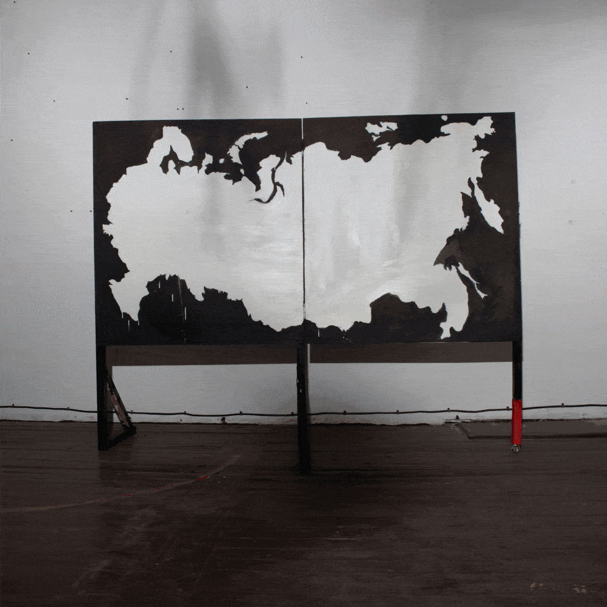

Большой спорт
2021
Москва, MMOMA
Описание +
На фоне строительного забора видны опоры последней уцелевшей при разборе стадиона трибуны,
но все мы видим, стоя по другую сторону забора, что у трибуны уже нет опор.
Невозможно подняться на эти сидения, тем более сесть на одно из них, ведь они подвешены стальной трубой к потолку.
Инсталляция выполнена в рамках группового проекта студентов Свободных Мастерских «Адаптация».
Инсталляция выполнена в рамках группового проекта студентов Свободных Мастерских «Адаптация».


Приложение 3, 4, макет
2021
Москва, Музей Москвы
Описание +
Скоро частные инициативы по поиску «кода города» и брендирования среды обратят на себя внимание реальных сил, влияющих на облик города – застройщиков и инвесторов.
На очередном этапе их взаимодействия девелоперам придется документально доказывать городским властям то, что при разработке проектов те учитывают индивидуальные характеристики территорий.
Однако глупо будет недооценивать институт развития формализма – документальные подтверждения могут стать еще одним необязательным условием и малозначительным препятствием на пути безграничной свободы коммерческой мысли.
Представленная инсталляция — это приложение 3 и 4 к проекту по преображению части Таганского района, составленных неназванной фирмой-застройщиком на основании полевых исследований.
В приложении 3 должна содержаться исчерпывающая информация о том, что из себя представляет район строительства.
Оригиналы изображений из приложения 3 хранятся в витрине как доказательство подлинности информации.
Инсталляция выполнена в рамках группового проекта «Москва без окраин. Таганка».
Инсталляция выполнена в рамках группового проекта «Москва без окраин. Таганка».


Подарок городу
2021
Липецк
Описание +
Инсталляция в виде строительного ограждения в парке г. Липецка.
В информационном баннере, представляющим визуализацию выполненных строительных работ, есть глупая грамматическая ошибка –
вместо правильного названия города цветами на клумбе выложено слово «Липетск» - то ли по невнимательности,
то ли исполнители работ действительно не знают, как правильно пишется название их собственного города.
Для этой работы ошибка является не результатом чьей-то деятельности, а тем, чего непроизвольно ожидаешь от людей, которые управляют городом.
Инсталляция выполнена в рамках группового проекта «Палимпсест».
Инсталляция выполнена в рамках группового проекта «Палимпсест».


Бумажная работа
2022
Петрозаводск, Longart
Описание +
Выставка объединяет работы, являющиеся результатом бумажной работы автора,
который свое основное время тратит на разработку проектной документации к объектам реставрации – это чертежи и пояснения,
эскизы больших инсталляций, которые по разным причинам невозможно соорудить, рисунки на полях и различные черновики.
Идея, которую формируют все представленные на выставке работы – в какой момент концепция и ее эскиз становятся проектом,
и что из всего вышеперечисленного можно считать результатом работы автора?
Инсталляция «Пожарный отсек» На последнем этаже галереи выстроена перегородка из ненужных бумажек-черновиков и чертежей (в технике папье-маше), за ней лежит гора выкрашенной в красный цвет бумаги, являющейся «бумажным пожаром» - при проектировании пожарных отсеков в здании отдельные секции помещений отделяются друг от друга противопожарными дверьми. На бумаге из предполагаемого пожара теоретические посетители эвакуируются из всех этих отсеков по путям эвакуации – в галерее настоящие посетители движутся к реально созданному пожарному осеку, полностью собранному из бумаги. И ясно, что бумажные двери не могут спасти от реального пламени, но их единственная задача – сдерживать бумажный пожар, и с ней они справляются.
Инсталляция «Пожарный отсек» На последнем этаже галереи выстроена перегородка из ненужных бумажек-черновиков и чертежей (в технике папье-маше), за ней лежит гора выкрашенной в красный цвет бумаги, являющейся «бумажным пожаром» - при проектировании пожарных отсеков в здании отдельные секции помещений отделяются друг от друга противопожарными дверьми. На бумаге из предполагаемого пожара теоретические посетители эвакуируются из всех этих отсеков по путям эвакуации – в галерее настоящие посетители движутся к реально созданному пожарному осеку, полностью собранному из бумаги. И ясно, что бумажные двери не могут спасти от реального пламени, но их единственная задача – сдерживать бумажный пожар, и с ней они справляются.

Узкий мир
2022
Санкт-Петербург
Описание
Инсталляция.
Смешанная техника, ДСП, акрил.
Смешанная техника, ДСП, акрил.
Installation.
Mixed media, acrylic on chipboard.
Mixed media, acrylic on chipboard.


Совместная работа
2023
Киров
Описание +
Летом 2023 года я сделал инсталляцию в выставочном пространстве в моем родном городе Кирове перед самым закрытием этого места. Перед входом в здание я разместил баннер с проектом по благоустройству прилежащего участка. В галерейном помещении я вывесил коллаж из затылков протестующих против нового проекта городских властей - словно такая акция уже прошла.
В итоге будущее места уже предопределено, все недовольные получили возможность выразить свои эмоции, протокол был выполнен - еще перед закрытием галереи рана была исцелена.
«Акция» фотопечать – 400х20см. Совместная работа с Маргаритой Асылгараевой.
«Проект» – фотопечать на баннере 200х80см.
«Акция» фотопечать – 400х20см. Совместная работа с Маргаритой Асылгараевой.
«Проект» – фотопечать на баннере 200х80см.


Приручить пространство
9-11/2023
Кафе Просвет, Москва
Описание +
Выставка Никиты Лучинина, художника из Кирова, живущего и работающего в Санкт-Петербурге, рассказывает о попытке обрести контроль над вещами, а через них — над местом, где живешь, и, возможно, собственной жизнью. Переехав в новую квартиру, оказавшись в еще необжитом пространстве, человек не всегда сразу верит в реальность обстоятельств и обстановки. Требуется время, чтобы понять: твои вещи, а значит, и ты сам — здесь не случайные гости. Все мы прикипаем к любимым вещам, возим их за собой, расстраиваемся, если теряем. Обрастая жизненным багажом, мы почти никогда не путешествуем налегке; любой переезд — это еще и поиск новой прописки для домашнего скарба. Как в поезде постоянно держишь в уме чемоданы, сумки и пакеты, так же пристраиваешь то, чем сейчас владеешь, по шкафам и полкам. Подыскивая «правильные» места вещам, вписываешь их не только и не столько в интерьер, сколько в новую картину мира. Так делают все люди, а художнику доступен как минимум еще один способ «навести порядок» — зафиксировать вещи на бумаге или холсте.
Текст Михаил Грачев. Куратор Люся Янгирова
Текст Михаил Грачев. Куратор Люся Янгирова


Соседи
12/2023 – 02/2024
Екатерингофская библиотека, Санкт-Петербург
Описание +
Эти кошки и собаки не могут влиять на место, в котором живут, а только их хозяева. Поэтому им остаётся только цапаться от бессилия.
В рамках фестиваля сайт-специфичного искусства в библиотеках «Не_место».
В рамках фестиваля сайт-специфичного искусства в библиотеках «Не_место».


Большая красивая еда
01-02/2024
кафе РИД, Санкт-Петербург
Описание +
Персональная выставка.
Маленькая бедная некрасивая еда осталась позади - сейчас всем нам нужна только большая красивая еда. То, что раньше по недоразумению и по незнанию называлось бутербродом с сыром, наконец-то признало свое истинное предназначение – стать грилл-чизом. Процесс эволюции подходит к концу, когда подходит твоя очередь перед прилавком с фантастическими сэндвичами, все трудности позади, – это завершение долгого процесса. Осталось только сделать заказ и дождаться, когда сыр внутри расплавится.
Маленькая бедная некрасивая еда осталась позади - сейчас всем нам нужна только большая красивая еда. То, что раньше по недоразумению и по незнанию называлось бутербродом с сыром, наконец-то признало свое истинное предназначение – стать грилл-чизом. Процесс эволюции подходит к концу, когда подходит твоя очередь перед прилавком с фантастическими сэндвичами, все трудности позади, – это завершение долгого процесса. Осталось только сделать заказ и дождаться, когда сыр внутри расплавится.